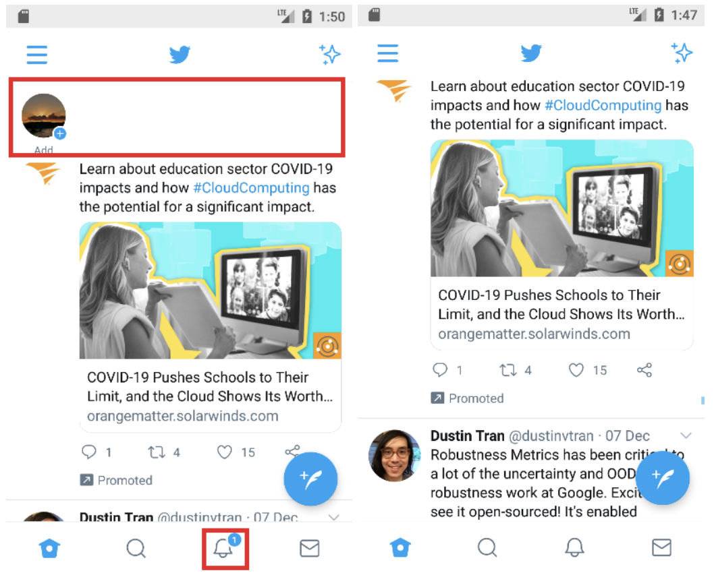

I am a PhD in Computer Science student at the University of Oxford under the supervision of Sir Nigel Shadbolt. I also completed parts of my PhD at Google (with Peter Anderson and Alex Ku) and Cornell University (with Prof Kilian Weinberger). My research is an end-to-end study of distributed machine learning. I have worked on model training/finetuning/alignment dynamics, metrics/evaluation methodology, datasets, security/privacy/fairness, and human-in-the-loop deployment.
Highlighted Publications
-

Siddhartha Datta, Alexander Ku, Deepak Ramachandran, Peter Anderson, Prompt Expansion for Adaptive Text-to-Image Generation, ACL 2024.
PDF -
Ruihan Wu*, Siddhartha Datta*, Yi Su, Dheeraj Baby, Yu-Xiang Wang, Kilian Q Weinberger [*equal contribution], Online Feature Updates Improve Online (Generalized) Label Shift Adaptation, NeurIPS 2024.
PDF -
Xiangyu Chen, Zhenzhen Liu, Katie Z Luo, Siddhartha Datta, Adhitya Polavaram, Yan Wang, Yurong You, Boyi Li, Marco Pavone, Wei-Lun Chao, Mark Campbell, Bharath Hariharan, Kilian Q. Weinberger, DiffuBox: Refining 3D Object Detection with Point Diffusion, NeurIPS 2024.
PDF -
Siddhartha Datta, Nigel Shadbolt, (Acknowledgements: Jamie Hayes), Multiple Modes for Continual Learning, NeurIPS 2022 Workshop.
PDF -
Siddhartha Datta, Nigel Shadbolt, Interpolating Compressed Parameter Subspaces, NeurIPS 2022 Workshop.
PDF -
Siddhartha Datta, Nigel Shadbolt, Projected Subnetworks Scale Adaptation.
PDF -

Konrad Kollnig, Siddhartha Datta, Thomas Serban von Davier, Max Van Kleek, Reuben Binns, Ulrik Lyngs, Nigel Shadbolt, ‘We are adults and deserve control of our phones’: Examining the risks and opportunities of an ability to repair for mobile apps, FAACT 2023.
PDF -
Siddhartha Datta, Cross-Reality Re-Rendering: Manipulating between Digital and Physical Realities.
PDF -

-

- 
-
Siddhartha Datta, Nigel Shadbolt, Low-Loss Subspace Compression for Clean Gains against Multi-Agent Backdoor Attacks, CVPR 2022 Workshop.
PDF -
Siddhartha Datta, Nigel Shadbolt, Backdoors Stuck At The Frontdoor: Multi-Agent Backdoor Attacks That Backfire, ICLR 2022 Workshop.
PDF -
Fast Cosmic Microwave Background Interpolator
Computes CMB power spectrum values at 106 times faster using meta learning.
-
Polysemy Word Tagging Tool
Word tagger & annotation tool to study concept/word learning of children
-
GreaseTerminator
GreaseTerminator is an active, non-invasive intervention tool to patch dark patterns in operating systems and app ecosystems through interface re-rendering.
-
GreaseDroid
GreaseDroid makes it easier for Android users to make their apps fit their special needs by decoding and inserting modular patches.
-
MemoryPalace
Winning submisson at CalHacks 5.0 (Epson sponsor award). Our team developed a pair of display goggles that helps patients with Alzheimer's or other visual/mental disabilities in locating their personal belongings. Users verbalize the item they are searching for (typically items from the COCO image dataset), and all objects detected would be highlighted.
-
BreakupBot
BreakupBot is a therapeutic chatbot developed to help get over romantic breakups. Organically acquired 200+ users of varying demographics. The system, initially built to help people who could not get over breakups, uses scraped content from dating sites and builds a philosophical counselling knowledge graph as the decision tree for generating responses to user input.
-
GIFShop Wizard
Computer vision has been left out of the hands of many photoshopping enthusiasts and chatbot users alike. We brought automated GIF-editing functionality to the masses with GIFShop Wizard, including First Order of Motion, Foreground Removal, Fast/Segmented Style Transfer, and CycleGAN through a chatbot interface.
-

FaceMap
Interpolating/transferring real-time user faces onto semantically-segmented StreetView buildings/roads/sky/... while users navigate around the world seen as them.
-
Music Generation through Food Detection, Assignment of Music Notes to Distinct Items, and Utensil Impact Detection
An an augmented reality system/game where people can see highlights (bounding boxes) over their food, and tapping their food will produce a certain instrumental sound to synthesize music (including guitar chords, piano on different scales, and drums). Deployed on mixed reality lens with object detection.
-
Location Network Fingerprinting: Network Analysis of Franchise Expansion
After aggregating expansion data from sucessful franchises/chains from many industries (including fast food, supermarkets, coffee, ...), we developed network analysis algorithms that identified statistically-likely patterns or fingerprints of expansion success. Specifically, we found that certain succesful firms tended to expand in certain ways that consolidated their success. We found the results to be 98% statistically significant, and pitched the system as a service for firms intending to expand within the US but are strategically unsure how.
-
HAIV: Computational Precision Medicine against HIV Drug Resistance
A mutation prediction algorithm built to map out subsequent mutations of a strain of HIV virus in a person's bloodstream over n timesteps, and can be further used in optimizing antiretroviral treatment (allocating the right medication at the right time to avoid drug resistance).